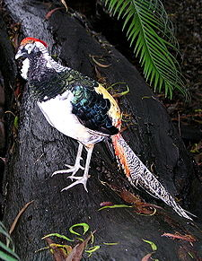

| Lady Amherst's Pheasant | |
|---|---|
|  | |
| Conservation status | |
| Binomial name | |
| Chrysolophus amherstiae Leadbeater, 1829 |

{kind=link}
The Lady Amherst's Pheasant, Chrysolophus amherstiae, is a bird of the order Galliformes and the family Phasianidae.
These are native to south western China and Myanmar, but have been introduced elsewhere, and have established a self-supporting, but now declining, feral population in England, the stronghold of which is now in Bedfordshire.
The adult male is 100-120 cm in length, its tail accounting for 80 cm of the total length. It is unmistakable with its black and silver head, long grey tail and rump, and red, blue, white and yellow body plumage. The "cape" can be raised in display.
This species is closely related to the Golden Pheasant and the introduced populations in England will interbreed.
The female is much less showy, with a duller mottled brown plumage all over, similar to that of the female Common Pheasant but with finer barring. She is very like the female Golden Pheasant, but has a darker head and cleaner underparts than the hen of that species.
Despite the male's showy appearance, these birds are very difficult to see in their natural habitat, which is dense, dark forests with thick undergrowth. Consequently, little is known of their behaviour in the wild.
They feed on the ground on grain, leaves and invertebrates, but roost in trees at night. Whilst they can fly, they prefer to run, but if startled they can suddenly burst upwards at great speed, with a distinctive wing sound.
The male has a gruff call in the breeding season.
The name commemorates Sarah Countess Amherst, wife of William Pitt Amherst, Governor General of Bengal, who was responsible for sending the first specimen of the bird to London in 1828.
Widespread throughout its large range, the Lady Amherst's Pheasant is evaluated as Least Concern on the IUCN Red List of Threatened Species.